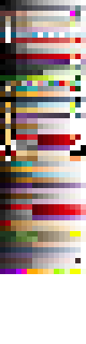
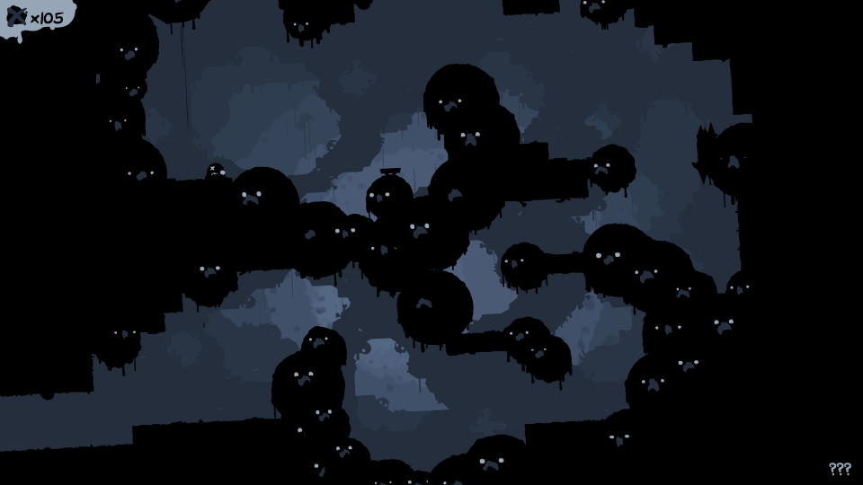
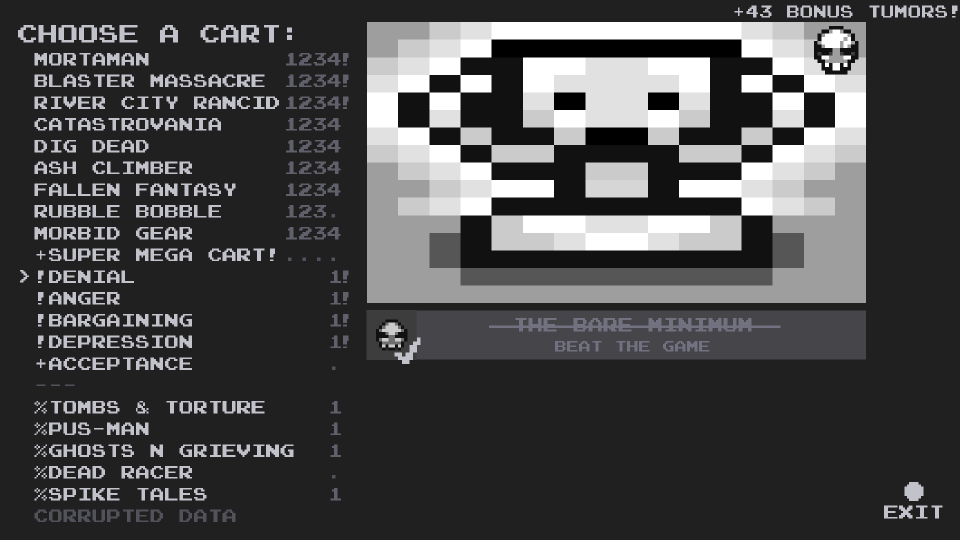

Welcome to The End is Nigh: Modder's Manual!
This manual plans to detail modding for The End is Nigh, providing help and information in a variety of different areas. Hopefully helping new modders begin learning and understanding the basics, as well as acting as a helpful reference for those more experienced. There are three main sections to the manual:
+ Getting started/tutorials
+ Using the editor
+ The reference
Each main category is split into easier to digest chunks. Another useful part of the manual is the Downloads section, which supplies useful tools to allow for modding The End is Nigh.
Downloads
Getting Started
This section explains how to get setup and started in TEIN modding, with tutorials showcasing how to carry out certain tasks, such as unpack the game data, create a level, etc. By the end of the section and tutorials, you will have created a small new zone for the game, and obtained a basic understanding of modding different aspects of the game. This area of the manual will not go into in-depth detail about every aspect of modding, see the Modding Reference section for detailed information.
Manual Syntax
Information regarding common syntax and formatting rules used throughout the manual. This will make further reading of the manual much easier, as you will have a greater understanding of how the manual represents different types of data/info.
How to Add NPCs
A detailed and simple beginner's guide explaining how to add custom NPCs to the game.
Various Video Tutorials
Video tutorials regarding different aspects of modding The End is Nigh.
Manual Syntax
This manual references and deals with a variety of different types of data regarding The End is Nigh. As a result, it is important that this data can be spotted and understood easily during reading and not mistaken for regular text. To make this a possibility different rules about syntax and formatting have been put into place, the following sections outline these rules and where they will apply.
Variables/Data
Case-sensitive and important data values, variable names, etc. will be formatted like so:
variable_name_or_value
Using this clear, monospace, font allows for such values to easily stand out in large blocks of text, as well as allowing for the case of each letter to be clearly visisble; this is important as such variable names will often be case-sensitive. Note file paths, and directories, are also formatted using this method; for example:
audio\sfx\npc.wav
This is a standard way of representing file paths and should be easily understandable.
Code/Files
The End is Nigh makes use of many external data files to store important information for the game. Excerpts from these files will be formatted like so:
example_code {
some_value
<mark>value_of_importance</mark>
etc
}
This is done for similar reasons to variables/data (hence the similar formatting). Furthermore, values of extreme importance, relevant to the current topic, will be highlighted. As can be seen on line 3 of the example code above.
When an ellipsis is used in an exerpt from one of the game's many files, it means that there is extra data that has been omitted due to lack of relevance. This allows readers to see that what is being shown is only a small section of a larger piece of data.
When an ellipsis is used in a piece of examply syntax it means that the data can carry on after what is being shown, representing that the variable can take multiple values.
Memory Addresses
When dealing with executable hacking, memory addresses are an important aspect, they are formatted the same as variables but are written out in hexadecimal, this is noted by the prefix 0x. Memory addresses, being referenced in-line, will often look like the following:
0x20ADC108: ...
However, lists of memory addresses will be formatted in a similar fashion to code/files:
0x20ADC108: ...
0x22CBFB12: ...
0x124A0802: ...
With the value stored at the memory address written after the colon (where the ellipsis is present in the examples).
Tile References
Tiles will often be refferred to using the following ID formatting: Z1, Z1 - 3, etc. These IDs, consisting of letters and numbers, refer to the specific location the tile can be found at in the Tile Reference. The number refers to the horizontal position in the table and the letter referes to the vertical position. When a hypen is present between two tile values it means all tiles within that given range are being referred to.
This method is used as it makes looking-up the tiles much easier than having to search through the reference for a specific name to appear.
How to add NPCs
The first step in making a custom NPC is to add an additional NPC to the data\npcs.txt file found in the unpacked game data. First, the NPC must be named; NPCs in game are named based on order of appearance, and race. Skeleton NPCs are named NPCx (where x is a unique number to differentiate them), Light Blob NPCs are named NPCBx, Ghosts are named NPCGx, Dark Blobs are named NPCDx, cameos such as Steven and Isaac, from Edmund's other games are named NPCXx, and finally the large Stevens that transport Ash to the future are named NPCHx. Therefore custom NPCs should use a unique naming scheme, such as NPCAx, to prevent your mod from editing and conflicting with in-game NPCs.
The basic description, such as #basic sideways that appears below the name has no effect and is used to identify NPCs.
The movieclip decides what form your custom NPC takes.
sound_id is similar, and decides the noises your NPC makes when it's dialogue activates. These are fairly descriptive, such as NPCSkull making a bone-rattling noise when spoken to. Generally, the sound_id should match the movieclip.
The text decides what your custom NPC says when spoken to. Each set of double-quotes "" is a separate box of text that appears in sequence. The new-line character \n makes the text after it start on a new line. Text should be surrounded by square brackets [], and dont forget to add curly brackets {} brackets around your NPC's code, or else an error will occur when you enter the level.
Here is an example of what an NPC entry could look like when complete:
NPC0 {
#basic sideways
movieclip NPC0
sound_id NPCSkull
text [
"oh \n . . . \n its you. . ."
"must be nice \n being alive \nn' all that"
"when i died \n that tumor wiggled out"
"it's been floating \n up there for years \n watching me"
"please\n dont take it. . . \n its all i have left"
]
}
To add your NPC to a level, you must add your NPC to the level's data\tilesets.txt code. The NPC's name should be written after npc_1, npc_2 or npc_3. Then, add your npc to the level using the level editor; NPCs are found in tiles Z1 - 3 in the editor, in order of number. See the Tile Reference for more information on these particular tiles.
After finishing the Getting Started / Tutorials section, please see the Modding Reference and particularly the NPCs section for more information on the possible values and details regarding custom NPCs.
Using the Tein Editor
This section will showcase how to use the editor, providing information on how it works, how to use the tools contained within, shortcuts/hotkeys, etc. This area will not cover modding aspects of the game itself and instead will focus entirely on explaining the editor. For more information regarding modding the game see either the Getting Started / Tutorials section or the Modding Reference section.
Under contruction
Reference
This section acts as a detailed reference where individual areas of modding can be looked at in-depth. This area does not cover modding basics and does not need to be viewed/read in sequence. Use this section if a specific piece of information needs to be found, e.g. what a certain tile does, what palettes are assigned to what areas, what the various data files do, etc. For more general tutorials and basic modding see the Getting Started / Tutorials section.
Tile Reference
A complete reference of all the game’s tiles that can be used within the editor. Supplying detailed information on their layer, type, and a description outlining each tile’s unique properties.
Palettes
Detailed information on how the game’s colour palettes work, what palettes are used by each area, and how to modify/add custom palettes.
NPCs
Information regarding NPCs and the "npcs.txt" file. Listing all the currently existing NPCs and how to modify them, as well as add new ones.
Art Alts.
Showcases and references all the different alternate art assets that can be used to swap out graphics for the different entities in the game.
Tilesets
A reference of all the available variables and values contained within the tilesets file, as well as how to modify said file to create custom tilesets.
Physics
Details regarding the various physics files that control how the player and tiles affected by movement tags move, and what each variable in the files means.
Tile Reference
Test
Overview
Location in the unpacked data: textures\palette.png
Palettes are used to recolour the many different assests in The End is Nigh. By loading different palettes for each unique area of the game, each zone is able to look drastically different whilst using many of the same assets.
The file that defines the palette information can be opened in any basic paint program to be modified, allowing for changes to be made to existing palettes as well as the ability to create entirely new ones.
The palette is made up of pixels, and these pixels are interpreted in two ways: as rows, and as a columns. The rows marks a unique palette that can be set, with its row number acting as its palette ID (0 - 63). Whereas each column the pixel is in (0 - 15) specifies what graphics the colour in that particular palette row will be mapped to, whether its background tiles, water/lava, tile details, etc.
Columns
The following section describes what assets/graphics each column of the palette is mapped to:
- 00 - Active tiles (solids, spikes, etc) and the player.
- 01 - Color of rings in carts
- 02 - Decorations for active tiles (bricks, rocks, etc.).
- 03 - Decorations for the first background layer.
- 04 - First background layer.
- 05 - Second background layer.
- 06 - Skulls, seen on a veriety of enemies throughout the game.
- 07 - Background image, layer 1.
- 08 - Background image, layer 2.
- 09 - Background image, layer 3.
- 10 - Background image, layer 4.
- 11 - Background image, layer 5.
- 12 - Certain NPCs, and miscellaneous objects.
- 13 - Toxic/Pollution, and miscellaneous objects.
- 14 - Lava and water (a more desaturated version of the lava colour).
- 15 - Character eyes and other facial features, text, and the glow effect in The Hollows.

These palette columns will also impact other small features of the game’s graphics. However, these are the main uses of each of the different columns.
Rows
The following section describes each palette row, and where it is used in the game:
- 00 - Super Mega Cart All Stars Intro Screen and The Game Intro Screen
- 01 - The End and The Save Select Menu
- 02 - Arid Flats
- 03 - Overflow
- 04 - The Split and Wall of Sorrow
- 05 - Retrograde
- 06 - The Hollows
- 07 - Unused
- 08 - SS Exodus
- 09 - The Machine
- 10 - Golgotha and Anguish
- 11 - Gloom
- 12 - Blight
- 13 - Ruin
- 14 - The End is Nigh Cartridge + Intro Screen and Corrupted Cartridge + Intro Screen
- 15 - Unused
- 16 - Mortaman Cartridge
- 17 - Blaster Massacre Cartridge
- 18 - Nevermore/The Future
- 19 - River City Rancid Cartridge
- 20 - Ash Climber Cartridge
- 21 - Catastrovania Cartridge
- 22 - Rubble Robble Cartridge
- 23 - Fallen Fantasy Cartridge
- 24 - Morbid Gear Cartridge
- 25 - Dig Dead Cartridge
- 26 - Super Mega Cart All Stars Cartridge
- 27 - Spike Tales Cartridge
- 28 - Scab or Die Cartridge
- 29 - Tombs and Torture Cartridge
- 30 - Mortaman Intro Screen and Pus-Man Cartridge + Intro Screen
- 31 - Blaster Massacre Intro Screen
- 32 - River City Rancid Intro Screen
- 33 - Ash Climber Intro Screen
- 34 - Catastrovania Intro Screen
- 35 - Rubble Robble Intro Screen
- 36 - Fallen Fantasy Intro Screen
- 37 - Morbid Gear Intro Screen
- 38 - Dig Dead Intro Screen
- 39 - Unused
- 40 - Spike Tales Intro Screen
- 41 - Scab or Die Intro Screen
- 42 - Tombs and Torture Intro Screen
- 43 - Ghosts ’N Grieving Cartridge
- 44 - Ghosts ’N Grieving Intro Screen
- 45 - Depression Cartridge + Intro Screen
- 46 - Denial Cartridge + Intro Screen
- 47 - Anger Cartridge + Intro Screen
- 48 - Bargaining Cartridge + Intro Screen
- 49 - Acceptance Cartridge + Intro Screen
- 50 - Dead Racer Cartridge + Intro Screen
All palettes onwards are unused and will display completely white unless modified. This leaves modders with 16 palettes that can be added without needing to modify the palette to accept more colours; see the second-half of the following section for details on how to add more palettes.
Modifying Palettes
Once the palette.png file has been modified, or if you simply want to give an area an existing palette, the tilesets.txt needs to be modified for a palette to be assigned. Locate the unpacked game data and navigate to the "data" directory, in there will be a file called "tilesets.txt", open this file. Locate the area which you would wish to modify, this can be found by looking at the area_name variable which will list the name of each area. Once the area has been found simply set the palette variable to the row number of your desired palette; remember that the top-most row in the palette.png image is palette 0 and they continue incrementing upwards in value the further down the image they are.
In the example below, the Arid Flats has been assigned the palette 10 (which is used for Golgotha and Anguish). Changing this value and relaunching the game produces the results on the right, compared to the original palette seen on the left.


For a more in-depth look at the various aspects of the tilesets.txt file, as well as how to modify it, click here.
Adding Palettes
In its default state, the palettes file can only store 64 unique palette entries (rows). However, this can be changed by modifying aspects of certain shader, which can be located in the "shaders" directory of the unpacked data. Two specific shaders will need to be modified for this to work "colormapped.shader" and "colormapped_duplicatedforstupidreasons.shader", as these shaders control how colours from the palette are mapped to colours used by the game's assets.
Open both palettes in any text editor (Notepad, Notepad++, Sublime-Text, etc.) and you will see the following text:
colormapped:
#version 130
uniform mat2x4 color_xform;
uniform sampler2D palettetex;
uniform float palette;
#if COMPILING_VERTEX_PROGRAM
void vert(){
//gl_FrontColor = gl_Color * color_xform[0] + color_xform[1];
vec4 outcolor = gl_Color * color_xform[0] + color_xform[1];
gl_FrontColor = vec4(texture(palettetex, vec2((outcolor.r*15.0+.5)/16.0,(palette+.5)/64.0)).rgb,
outcolor.a);
gl_Position = gl_ModelViewProjectionMatrix * gl_Vertex;
}
#elif COMPILING_FRAGMENT_PROGRAM
void frag(){
gl_FragColor = gl_Color;
}
#endif
colormapped_duplicatedforstupidreasons
#version 130
uniform mat2x4 color_xform;
uniform sampler2D palettetex;
uniform float palette;
#if COMPILING_VERTEX_PROGRAM
void vert(){
//gl_FrontColor = gl_Color * color_xform[0] + color_xform[1];
vec4 outcolor = gl_Color * color_xform[0] + color_xform[1];
gl_FrontColor = vec4(texture(palettetex, vec2((outcolor.r*15.0+.5)/16.0,(palette+.5)/64.0)).rgb,
outcolor.a);
if(outcolor.r < .1 && outcolor.g < .1 && outcolor.b > .9){
gl_FrontColor = vec4(0.0,0.0,0.0, outcolor.a);
}
gl_Position = gl_ModelViewProjectionMatrix * gl_Vertex;
}
#elif COMPILING_FRAGMENT_PROGRAM
void frag(){
gl_FragColor = gl_Color;
}
#endif
The highlighted values are the important ones, the 16.0 is the number of columns in the palette file (width) and the 64.0 is the number of rows in the palette file (height). The height is the only value that needs to be modified, simply change this value in both shaders to the number of however many palettes you would like, make sure this matches your palette file itself. Now the new palette row number (64 onwards) needs to simply be referenced in the "tilesets.txt" file for the area that will use the new palette (see the Modifying Palettes section if you do not know how to set a palette for an area), and that is all that needs to be done to add more palette rows to the game.
For more information regarding shaders, click here.
Remarks
Expanding the "palette.png" file to add more palettes, without making the appropriate changes to the colour mapping shaders, will result in incorrect colours and palettes being displayed.
Transparency/alpha is not read from the palette, so saving semi-transparent pixels will simply result in the same colour being used in-game, but with the alpha being set to full - removing the transparency. Fully transparent pixels will either be black or white, depending on how the paint program being used to modify the palette handles saving transparency.
The map screen will make use of colours from the currently loaded area palette to tint the different icons, graphics, etc. As will other graphical elements, such as the tumor counter, NPC text boxes, etc.
Overview
Location in the unpacked data: data\npcs.txt
The NPCs file dictates information regarding all the available NPCs in the game; it defines the traits of each NPC: sound, graphics, text, and all of the aspects that make the different NPCs unique and interesting.
Here is an example of the syntax of one NPC taken from the file (NPC0):
NPC0 {
#basic sideways
movieclip NPC0
sound_id NPCSkull
text [
"oh \n . . . \n its you. . ."
"must be nice \n being alive \nn’ all that"
"when i died \n that tumor wiggled out"
"it’s been floating \n up there for years \n watching me"
"please\n dont take it. . . \n its all i have left"
]
}
Whilst this may seem complex, the syntax for an NPC can be broken down and represented as the following:
[NPC_ID] {
moviclip [VALUE]
sound_id [VALUE]
text [
"[VALUE]"
...
]
}
The # followed by text, in the example, is simply a comment and not interpreted/read by the game itself, hence why it was not added in the simplified syntax breakdown. These comments have been added to all the NPCs in the "npcs.txt" file to allow for more readability.
So, overall, the "npcs.txt" file simply stores a series of NPCS and their properties, that can be placed into the game for the player to interact with. Read on for more information on each of these variables, as well as how to add/modify NPCs.
NPC Listing (IDs and Movie Clips)
A graphical list displaying all of the NPCs within the game. With their appropriate NPC IDs (the values used to set NPCs in the Tilesets file) below them, these values also double-up as being the names used to reference the particular movie_clip (graphic/sprite) that an NPC is given. Remember that variables and their values are case-sensitive, in the case of NPCs all of the IDs are fully capitalised, no lower-case.
Skeletons
Light Blobs
Ghosts
Dark Blobs
Characters
Stevens
As well as the NPC movie clips listed above, NPCs can also be assigned any of the alternate art values as their ```movie_clip`` value. For a full listing on the available movie clips that can be used, see the Art Alts. section.
Sound IDs
The sound_id variable is used to define the sound played when the NPC is
spoken to and when text is advanced. The available sound IDs are as follows (the
values in brackets mark what sound file each sound ID references):
NPCSkull (audio\sfx\skullnpc.wav)
NPCBlob (audio\sfx\squishnpc.wav)
NPCGhost (audio\sfx\ghostnpc.wav)
NPCIsaac (audio\sfx\isaacnpc.wav)
NPCStevenCameo (audio\sfx\stevenheadwarpnpc.wav)
NPCGish (audio\sfx\gishnpc.wav)
NPCGuppy (audio\sfx\catnpc.wav)
NPCAether (audio\sfx\aethernpc.wav)
NPCSteven (audio\sfx\stevennpc.wav)
New sounds can be created by modifying mainsounds.txt and
retrosounds.txt; see the section Sounds for more information on
creating new sounds.
Text
The text variable details what text will be displayed when the NPC is
interacted with; there are certain formatting rules regarding this text that
are quite important in ensuring that the NPC’s text works correctly and looks
visually appealing. Below is some example text from an NPC that can be used to
compare with what is being explained, to make it easier to understand:
text [
"when i used\n to hang off\n a wall"
"id pull\n out from it \nand then"
"id do a \n jump. . . and \n go like super far!"
"but when i \ndidn’t pull \noutwards"
"id mostly just \n go up higher"
"i call it the \npull out method"
"\n. . ."
"i made that \none up years \nago"
"i imagined it \nwould get more \nof a laugh"
"\n. . ."
"please \nleave me alone"
]
Text is entirely contained within square brackets []. When writing text ensure that it is always wrapped inside these brackets or else the game may not interpret the text correctly -- or worse, crash.
Text is then split into different sections, each section is encased within quotes "". These sections define when a button-prompt will appear asking the player to advance the text, when the user presses the appropriate button the text will advance and begin scrolling through to the next section. It is important to reguarly split text into sections for easier reading.
Finally, a special type of character is used called a new-line \n, this
character informs the game to start writing text on the next line, rather than
being displayed itself. Once again, it is important to reguarly add new-lines so
that the text does not clip outside of the text box; however, no more than three
lines should be in any given text section, otherwise potential veritcal clipping
may occur.
The text box itself can fit appoximately 22 characters on each line, however, this number will vary depending on the characters used due to the font having varying character widths.
Alt. Text
The alt_text variable is used and formatted in exactly the same way as the
regular text variable. However, this variable is only used on the four Steven
NPCs and acts as the alternate text to display when the appropriate number of
tumors has been collected. Below is a list of how many tumors is needed to make
each NPC trigger their alternate text (these amounts are hard-coded):
- NPCH1 :: 50 Tumors
- NPCH2 :: 100 Tumors
- NPCH3 :: 170 Tumors
- NPCH4 :: 300 Tumors
Furthermore, the addresses for the various tumor counts needed to trigger alternate text are as follows:
0x000E489D: 50
0x000E495C: 100
0x000E49A8: 170
0x000E4A3A: 300
Attempting to apply the alt_text variable to any other NPC will do nothing.
Based on testing, it is apparent that the NPC IDs that react to alternate text
are hard-coded into the game and will require executable hacking to modify. The
addresses for the alternate text NPCs are as follows:
0x00231274: "NPCH1"
0x002312AC: "NPCH2"
0x002312B4: "NPCH3"
0x00231294: "NPCH4"
For more information on how to modify these values effectively, see the Executable Hacking section.
Adding NPCs
To add an NPC, the first thing that must be done is a new NPC entry must be made in the "npcs.txt" file. This can be written out by following the syntax given in the Overview section, or by copying an existing NPC entry and changing the values as neccessary. When making a new NPC ensure that its ID is completely unique from all the others, otherwise conflicts will occur. Then set all of its variables/properties appropriately, the information in the previous sections of this page can be used as a guide to help.
Once the NPC has had all of its information filled out, it must then be assigned
to a specific NPC tile (Z1 - 3), using the "tilesets.txt" file. Locate the
specific area tileset that you wish for the NPC to appear in and add in an
npc_x variable, where x is a value between 1 and 3; this refers to which
NPC tile will be used to place the NPC. An example excerpt from "The End"
tileset, shwocasing the NPC definitions:
1 {
...
npc_1 NPC0
npc_2 NPC1
npc_3 NPC2
...
}
Once this is done, placing any one of the NPC tiles in a level using this tileset will spawn the new NPC.
For more detailed information on modifying tilesets using the "tilesets.txt" file, click here.
Remarks
Placing one of the NPC tiles (Z1 - 3) in a level with its value in the tileset being undefined or set to none will simply result in nothing appearing at the location. Fortunately the game will not crash or present any other kinds of abstract behaviour.
Setting the NPCs movieclip or sound_id variables to invalid values
will result in the game crashing when the level containing the NPC is entered.
Futhermore, not includng any of these fields, including text, will also cause a
crash. However, if any of these problems occur, the game will display a helpful
error message making debugging such as issue relatively easy.
Inclusion of the the text field but leaving it like so: text = [] will
lead to the game crashing when the NPC is interacted with; no error message is
supplied in such instances.
Art Alts.
Note, this page simply provides a reference of all the currently known art alts.
that can be used. For information on how to modify the art_alts variable in
the tilesets file, see the Art Alts. section on the
Tilesets page.
Art alts. allow for instances of graphics to be swapped out with other graphics, allowing for a large amount of visual flexibility and variance. For more information on how to apply art alts, within an area, see the Art Alts. section of the Tilesets page.
Art Listing
The following listing displays all the known art alts. Many have pictures attached to provide a visual representation of what they look like, but for others just a description is supplied. The assets have been categorised, in the list below, to make finding the right art alt easier.
General - Generic art assets and items.
Enemies - The hostile enemies.
Mini - Small decorative creatures.
Decorations - Decorative assets.
Retro - Retro entities and items.
NPCs - Interactive NPCs.
Tilesets - The tile graphics.
Overlays - Decorations on top of tile graphics.
Backgrounds - Background images.
Foregrounds - Foreground images.
Mix-FX Layers - Shader effect layer graphics.
Particles - Effects and particles.
Cutscenes - Video animations.
Transitions - Screen transitions and effects.
GUI - Interface elements and UI graphics.
Misc. - Assets that fit in no category above, or are unused.
General
 Player |
 Life |
 BigLife |
 CartConsole |
|
 Cartridge |
 cart2 |
 cart3 |
 Key |
 Hopper |
 ChainHitch |
 ChainLink and ChainLink2 |
 FloatingMine |
 Jar |
 OutWarp |
 Gate1 |
 Gate2 |
 Gate3 |
 Gate4 |
 DeathGhost |
 TheHead |
 TheBody |
 TheHeart |
 Stand |
 FinalSteve |
 GlowShroom |
 GlowShroomSmall |
Enemies
 MovingOrbBlob |
 orbblob |
 OrbBlob2 |
 OrbSmall |
 OrbLarge |
 OrbLarge2 |
 OrbChomp |
 AimSpitter |
 AimSpitter2 |
 eyeshooter |
 SpitterX |
 SpitterY |
 Bullet |
 eyebullet |
 Floater |
 ChargeSlug |
 Slug |
 BigCharger |
 BigSlug |
 Splatter |
 Gasser |
 GasCloud |
 Cannon |
 Cannonstand |
 Cannonball |
 Fireball |
 ThwampEye |
 ThwampGear |
 CheepCheep |
 Frog |
 SkullCrow |
 SkullFloater |
 SkullFloaterBreaky |
 SkullSlug |
 Bouncer |
 ChainChomp |
 CreepingMass |
 CreepEye |
 Fish |
 Fish2 |
 Mask |
 Revolver |
 gface and ElectroBall |
 Ghost |
 Sentry |
Mini
 MiniDrone |
 MiniBird |
 Fly and MiniFly |
 MiniFish |
 MiniFishWhite |
 MiniFlea |
 MiniFrog |
 MiniFrogWhite |
 MiniGhost |
 MiniWisp |
 MiniRat |
 MiniRatWhite |
 MiniWorm |
Decorations
 Decoration0 |
 Decoration1 |
 decoration 8 and Deco10 |
 Decoration9 |
|
 Decoration4 |
 Decoration5 |
 Decoration6 |
 Decoration7 |
|
 Deco11 |
 inst10 |
 inst11 |
 eyeball |
 EscapeEnd |
Retro
 MiniDrone |
 Cannonretro |
 Cannonstandretro |
 cannonballretro |
 cannonballfireretro |
 Gasserretro |
 GasCloudretro |
 Floaterretro |
 Floater2 |
 FloaterGlitch |
 SkullFloaterretro |
 SkullSlugretro |
 SkullCrowretro |
 cheepretro |
 Frogretro |
 RetroOrbSmall |
 RetroOrbLarge |
 pacman |
 RetroElectroBall |
 RetroGhost |
 Maskretro |
 ChainChompretro |
 ChainHitchretro |
 ChainLinkretro |
 Revolverretro |
 Bouncerretro |
 CreepingMassRetro |
 hopperretro |
 ThwampEyeRetro |
 ThwampGearRetro |
 Slugretro |
 RetroChargerSlug |
 Splatterretro |
 bulletretro |
 RetroFish |
 SpitterZretro |
 SpitterYretro |
 SpitterXretro |
 Coin |
 cartend |
NPCs
 NPC0 |
 NPC1 |
 NPC2 |
 NPC3 |
 NPC4 |
 NPC5 |
 NPC6 |
 NPC7 |
 NPC8 |
 NPC9 |
 NPC10 |
 NPC11 |
 NPC12 |
 NPC13 |
 NPC14 |
 NPC15 |
 NPC16 |
 NPC17 |
 NPCB1 |
 NPCB2 |
 NPCB3 |
 NPCB4 |
 NPCB5 |
 NPCB6 |
 NPCB7 |
 NPCG1 |
 NPCG2 |
 NPCG3 |
 NPCG4 |
 NPCG5 |
 NPCG6 |
 NPCG7 |
 NPCD1 |
 NPCD2 |
 NPCD3 |
 NPCD4 |
 NPCD5 |
 NPCD6 |
 NPCD7 |
 NPCX1 |
 NPCX2 |
 NPCX3 |
 NPCX4 |
 NPCX5 |
 NPCH1 |
 NPCH2 |
 NPCH3 |
 NPCH4 |
Tilesets
 Tilecity |
 Tilefield |
 Tilecaves |
 Tiletox |
 Tiletox2 |
 Tilehell |
 Tileairship |
 Tilecomplex |
 theglow |
 TileEnd |
 Tileretro |
 TileGlitch |
 Tilesewers |
 Tile |
Overlays
 Overlayscity |
 Overlaysfield |
 Overlayscaves |
 Overlaystox |
 Overlaystox2 |
 Overlayshell |
 Overlaysairship |
 Overlayscomplex |
 Overlaystheglow |
 Overlaysend |
 Overlaysretro |
 TileOverlays |
Backgrounds
 bg2 |
 ch2bg |
 ch3bg |
 ch4abg |
 Background |
 hellbg |
 airshipbg |
 field2bg |
 bgsolid |
 neverbg |
 bgretro |
 bgretrox |
 bgretro2 |
 None |
Foregrounds
 fg1 |
 fgretro |
Mid-FX Layers
 SolidBox |
 ShadeBox |
(The following art alts. are simply listed, and have no graphical representations yet.)
Particles
ToxicParticle - Used in the toxic waterfall particle effect.
ToxicParticle2 - An unused variant of the toxic particle.
TestParticle - Used for the falling tile dust particle.
TestParticle2 - Used in a variety of different particle effects.
soliddrip - Used in a variety of liquid-based particle effects.
spark - A sparking particle.
spark2 - A slight variant on the other sparking particle.
Rock - Used in the rocks particle effect.
Rock2 - Used in a variety of block breaking particle effects.
Light - An orb of light used in a single particle effect.
Lightning - A lightning effect used in Nevermore and The Future.
Leaf - Falling leaves particle.
Leaf2 - A variant of the falling leaves particle.
goo1 - An unused goo particle.
goo2 - A goo particle used when splashing in toxic water.
Gibs - Unused player death particles.
Gibs2 - One of the particles used in the player’s death, chunks of gore.
DistortionParticle - Greeny-red blobs used in distortion-based particles.
DistortionParticle2 - A slight variation of the other distortion particle.
WindCloud - A variety of different cloud shapes.
cloud - Used in player/enemy bouncing particles and the exploding mines.
blackpart - One of the effects used in the player’s death, black circles.
Cutscenes
towerending - Completing the Acceptance cartridge.
allstarending - Completing the All Stars cartridge.
towercart - Collecting all Iron Carts.
supercart - Collecting all regular Cartridges.
NevermoreCutscene - The intro after losing 450 tumors, the giant orb expanding.
NevermoreCutscene_Win - The true ending for the game after beating Nevermore.
GameIntro - The intro cutscene before playing the cartridge.
CartIntro - The intro cutscene before playing the cartridge, with The End is Nigh cart intro as well.
IntroCutscene - Intro cutscene, after dying in the intro cartridge.
IntroCutscene_Egg - The cutscene played if the intro cartridge is completed.
GameOverCutscene - Game over cutscene in The Future levels.
GameOverCutscene_Cart - Game over screen in cartridge levels.
EscapeSequenceCutscene - The intro to the Acceptance escape sequence.
EscapeSequenceCutscene_Win - Beating the Acceptance escape sequence, the end of the game.
CartIntro2 - Cartridge cover intro with fade into the level.
ContinueCutscene - Continue screen when enough lives are lost in a retro cartridge.
CartWin - Beating a cartridge screen.
AssembleDudeCutscene - The cutscene of the friend being assembled.
Transitions
Wipetranswarp - Map warping and leaving a secret transition.
Wipetranssteven - Entering one of the The Future levels via a Steven.
Wipetransright - Screen wipe from left-to-right.
Wipetransleft - Screen wipe from right-to-left.
Wipetransdown - Screen wipe from bottom-to-top
Wipetransup - Screen wipe from top-to-bottom.
Wipetrans - The same as Wipetransright.
fadetrans - Fade to black.
retrofadetrans - Retro fade to black.
halfretrofadetrans - Retro fade to black and normal fade out from black.
GUI
Unlockinfo - "Cartridge Unlocked" pop-up message.
Unlockinfo2 - "Warp Point Unlocked" pop-up message.
TumorIcon - The various tumor icons used on the top-left tumor count in-game.
TitleScreen - The game intro followed by the title screen.
SpeechBubble - An NPC speech bubble.
SpeechBubble2 - An NPC speech bubble.
SkipPrompt - The "Skip Cutscene" prompt.
SaveFileCard - One of the save file ghosts, showcasing unlock info.
RetroLivesCounter - A counter of the current number of lives.
prog_cart - The progress counter on the left of regular carts: "1234!"
PauseMenu - The in-game pause menu screen.
MapPing - The downward arrow that points to important locations on the map.
MapIcon - The Ash icon that moves around the map.
map_node - A singular dotted-line and area icon, with text.
Map - The entire map menu, with all the nodes, elements, and the background.
MainMenu_Selector - The text featured on the title screen "Play", "Options", and "Quit".
LoadFile - The save file selection screen.
LevelTitle - The various area label frames fading in and out.
Letterbox - Screen letterboxing. (Used in cutscenes?)
HUD - The entirety of the on-screen HUD, including the escape counter.
DebugConsole - The debug console screen.
Misc.
BigLink - Three chain links with a red scribble drawn through them.
x - An unused game over message, using the normal font.
Warp - A static piece of the secret "Leave Area" warp.
OS_Indicator - A circle containing Ash’s face. (Potentially used to mark where/when Ash was off-screen?)
EscapeTrigger - A doodle of a character holding a bomb.
Carts - Placeholder cartridge art.
CamOverlay - Random text in the top-left corner of the screen.
PlayerTrail - The player’s trail. (In the air?)
PlayerTrailGround - The player’s trail on the ground.
PlayerTrailGround2 - A slightly different variant of the player’s trail on the ground.
PlayerTrailDucking - The player’s trail whilst ducking.
ButtonBlock_Out - A tile shrinking, used when a switch despawns a tile.
ButtonBlock_In - A tile expanding, used when a switch spawns a tile.
Adding Art Alts
Adding art alts. can be done by modifying the game’s SWF. Making art alts. requires an understanding of existing art alts. so that frame and layer patterns can be replicated correctly based on what is being created (e.g. all tilesets require the same basic layout, just different graphics). Once the graphics have been developed, AS (ActionScript) linkage must be applied to that the game has a name it can use to reference the asset, just like with the other art alts.
[UNDER DEVELOPMENT: Current information is bare-bones and will be updated with more detail in a future update.]
Remarks
Art alts are used and referenced in a variety of different files to add graphics
to certain entities within the game. These files are as follows:
data\npcs.txt, data\tilesets.txt,
and data\particles.txt.
Clicking on any of these filenames will take you to their respective pages
for more information (particles not yet available).
Not all art alts. will work in a usable fashion and be compatible with one another. A good example being any of the tilesets which, if applied to something like an NPC, will simply display all of its individual tile graphics in rapid succession. Noting down all of these potential incompatibilities would be far too large and complex of a list, so trial-and-error, as well as practice, is the best method for figuring out what will and will not work.
If the game crashes with an error referring to a movie clip not being found, it is most likely due to an art alt. being named incorrectly in one of the files referenced above.
Tilesets
Location in the unpacked data: data\tilesets.txt
The tilesets file is one of the most important when modding TEIN, especially in regards to adding new areas/zones. The file dictates general information about a given area, but also defines many of the traits and aspects that will make an area unique (graphical elements, what music to use, palette, etc.).
Here is an example tileset taken from the game, ("The End" downward secret area tileset):
1xd { #1 bonus downward areas
area_name "The End"
area_label_frame 1
tile_graphics Tilecity
overlay_graphics Overlayscity
background_graphics bg2
palette 1
fx_shader reflectionripples
music [**hmk_secret_intro.ogg, hmk_secret_loop.ogg**]
ambience rain.ogg
stop_previous_music false
music_volume 1
ambience_volume 1
area_type normal
tile_particle_1 drip
npc_1 NPCD6
npc_2 NPC0
npc_3 none
}
Whilst this may seem complex, the syntax for a tileset can be broken down and represented as the following:
[**TILESET_NAME**] {
[**VARIABLE_NAME**] [VALUE]
...
}
The # followed by text, in The End example, is simply a comment and not interpreted/read by the game itself, hence why it was not added in the simplified syntax breakdown.
So, overall, the "tilesets.txt" file simply stores a series of tilesets that define properties, features, and aspects of the different zones in the game. Allowing for them to make use of different assets, music, NPCs, alternate graphics, particles, etc.
Contents
- Variables Overview - Details about the Area Name variable.
- Area Name - Details about the Area Label Frame variable.
- Area Label Frame - Details about the Area Type variable.
- Area Type - Details about the Tile Graphics variable.
- Tile Graphics - Details about the Overlay Graphics variable.
- Overlay Graphics - Details about the Background Graphics variable.
- Background Graphics - Details about the Foreground Graphics variable.
- Foreground Graphics - Details about the Palette variable.
- Palette - Details about the Music variable.
- Music - Details about the Ambience variable.
- Ambience - Details about the Music Volume variable.
- Music Volume - Details about the Ambience Volume variable.
- Ambience Volume - Details about the Stop Previous Music variable.
- Stop Previous Music - Details about the NPC variable.
- NPC - Details about the Art Alts. variable.
- Art Alts - Details about the Toxic Timer variable.
- Toxic Timer - Details about the Cart Intro PNG variable.
- Cart Intro PNG - Details about the Cart Intro Palette variable.
Variables Overview
- area_name - The name that will appear on the save file. It is also used to reference the area in certain instances.
- area_label_frame - The title graphic in the game’s SWF that is displayed when the area is entered.
- area_type - What sub-type of area is it, defines certain properties of the level (e.g. dark levels use tumors as lives).
- tile_graphics - The graphical tileset to use, changes details about the visuals of the area’s layers.
- overlay_graphics - The graphics that are displayed on top of the active layer (bricks, rocks, bones, etc.).
- background_graphics - The background image to use for the area.
- foreground_graphics - The foreground image to use for the area.
- midfx_graphics - ???
- midfx_layer - ???
- fx_shader - The shader to apply certain visual effects in the area.
- fx_shader_mid - ???
- shader_param - Controls the intensity of the mid_fx layer (from 0 to 1, decimal numbers valid).
- palette - The row of the
palette.pngto use for rendering graphics. (Palette rows start couting from 0, not 1). - music - The music to play whilst in the area.
- ambience - The ambient background noise that will be played in the area.
- music_volume - The volume the area’s music should be played at.
- ambience_volume - The volume the area’s ambience should be played at.
- stop_previous_music - A flag stating whether the previous music track should stop or continue playing silently.
- tile_particle_1 (to 5) - A particle effect, defined in
particles.txt, to assign to the two particle tiles. - global_particle_1 (to ???) - A particle effect, defined in
particles.txt, to spawn globally throughout the area. - npc_1 (to 3) - The NPCs, defined in npcs.txt, to assign to the three NPC tiles used in the level.
- decoration_1 (to ???) - The decorations to assign to the ??? decoration tiles used in the level.
- art_alts - Alternate sprite graphics to use on entities that allow for alts.
- toxic_timer - Controls how long toxic clouds and water will take to kill the player in seconds.
- cart_intro_png - The filename from the
textures\folder to use as the cartridge area’s intro graphic. - cart_intro_palette - The palette to use when rendering the cartridge intro graphic.
Area Name
The area name is a unique identifier for a given area, it is the text that will appear on the save file when a game is saved within the zone, when writing the label frame within the tilesets file, it should be wrapped in double-quotes "Example Name" allowing for spaces. Not doing this may confuse the game and cause problems when reading the area’s tileset.
Whilst it may be assumed that this variable also controls the level name
(bottom-right corner in-game), this is in fact incorrect. The individual level
names are controlled via the levelinfo.txt file, in the data\ folder of the
unpacked game files; for more information on editing level info, click here. The
text graphic displayed at the top of the screen when a new zone is entered is
also not controlled by this property, see the Area Label Frame section below for
more info.
The only other factor controlled by the area name is the slant effect seen in Nevermore/The Future (see image below). By setting an area’s name to "Nevermore" it will be given said slanting effect, but as stated previously, will also result in the, most likely, unwanted side-effect of the save file displaying "Nevermore". The only, currently known, solution to setting the slant effect is by hacking and modifying a plain-text value contained withing the game’s executable located at address 0x00232A18. However, performing the hack and handling the legality of redistributing the executable is more effort than it is worth. Furthermore, the string appears to be of a fixed length, or at the very least only contain a few more bytes that could be overwritten. Meaning assigning a zone like the Wall of Sorrow the slanting effect would be impossible, due to this limitation.
 Notice the slight slant down on the left side of the screen, when compared to the right.
Area Label Frame
Area Label Frame
The area label is the unique graphic that appears on screen whenever a new area is entered. The area label frame variable refers to a specific frame of the area label symbol, located inside the game’s SWF, informing the game which graphic to render--basically acting as an ID for each graphic. Below is a list detailing what frame holds each graphic, and some examples of area labels on the right:
- 00 - No Area Label
- 01 - The End
- 02 - Arid Flats
- 03 - Overflow
- 04 - The Split
- 05 - Wall of Sorrow
- 06 - SS Exodus
- 07 - Retrograde
- 08 - The Machine
- 09 - The Hollows
- 10 - Golgotha
- 11 - Anguish
- 12 - Gloom
- 13 - Blight
- 14 - Ruin
- 15 - Nevermore
- 16 - The Future

Area Label Examples
Adding new area labels, or modifying existing ones, involves modifying the game’s SWF. For more information on the SWF and modifying it, click here.
Area Type
The area_type variable controls specific aspects of a tileset/area,
such as how it will handle deaths, etc. If the area type variable is left
undefined, then the area will be of type normal -- the default value. The
variable accepts the following values, with each one having a unique effect that
will change the way the area acts:
ironcart
The retro monitor filter will be applied, as will retro sounds, and a cart intro graphic (cart_intro_png) will be displayed when entering the area. Dying will send the player back to the first level in the area; if used in an area that was not reached via the TV/Console, then the player will be spawned in the last non-ironcart room they were in. Using the "Exit Cart" option from the menu will take the player back to 1-1.
cart
The retro monitor filter will be applied, as will retro sounds, and a cart intro graphic (cart_intro_png) will be displayed when entering the area. The player will have a limited number of lives to beat the area. Using the "Exit Cart" option from the menu will take the player back to 1-1.
glitch
The retro monitor filter will be applied, as will retro sounds, and a cart intro graphic (cart_intro_png) will be displayed when entering the area. Graphical elements will be reset/randomised on every death. Using the "Exit Cart" option from the menu will take the player back to 1-1.
normal
The standard areas in the game, there are no extra effects or parameters added.
dark
The current tumor count will act as the player’s lives, and losing all lives will respawn the player at the first level in the area.
Tile Graphics
The tile_graphics variable dictates what graphics are used when drawing the
environment tiles for the game, these include the solid tiles and the modular
background layer pieces. As can be seen in the example images, this could mean
changing a damaged building wall in The End tileset, to a natural rocky wall in
the Arid Flats tileset, and so on; allowing for each area to have a unique theme
and visual flare. As well as the graphics for the environment tiles themselves,
the value given to the tile graphics will also control what default decorations
an area will use. However, these decorations can be overwritten by assigning new
ones using the decoration_1 (to ???) variable. For more information on what these
default decorations are, see the Decorations section on this page. If the
variable is unset then it will be given the value of Tile, the default value.
None is not a valid value for tile graphics, and will result in the game crashing
on startup.
Whilst it may be logical to also assume that the tile graphics will impact the
small images drawn on top of the tiles (bricks, rocks, etc.), this is in fact not
true and is instead controlled by the overlay_graphics variable. Furthermore,
graphics such as Water, Lava, and Pollution/Toxic are also controlled via other
factors, in this case shaders. For more info on adding shaders to tilesets, click
here.
The specific graphics assigned to each tile within the tileset is determined
randomly when the level is loaded, and in the case of TileGlitch graphics,
further randomisation to the tiles will occur.
As the tile graphics variable takes in movie clips as its value, this means that any of the available art alts. can be used as tile graphics. For a full list on all the available art alts. see the Art Alts. section.
Examples of the different tile graphics can be seen below.
Overlay Graphics
The overlay_graphics variable dictates what graphics are drawn on top of
the active/solid tiles and the first layer of modular background tiles. As can
be seen in the example images, this could mean changing a few bricks in
The End overlay, to a cluster of rocks in the Arid Flats overlay, and so on;
allowing for each area to have a unique theme and visual flare. If the variable
is unset then it will be given the value of TileOverlays, the default
value. None is also a valid value for overlay graphics, and will result in no
overlays being displayed for the area.
The specific graphics overlayed on each tile in the level is determined randomly
when the level is loaded, and if TileGlitch is being used as the
tile_graphics value, then further randomisation to the tiles and overlays
will occur.
As the overlay graphics variable takes in movie clips as its value, this means that any of the available art alts. can be used as overlay graphics. For a full list on all the available art alts. see the Art Alts. section.
Examples of the different overlay graphics can be seen below.
Background Graphics
The background_graphics variable specifies what graphic to display as the
background image of a level. If no background_graphics variable is specified then
the game will render the background as a solid dark-grey colour; this is the same
as if None is used as the background graphics value. Each background has a unique
anchor-point, meaning each one will be placed in a level differently, sometimes
resulting in the solid grey colour showing through in areas. The N0 tile can be
used to offset the background within a level, so that it can be placed where desired.
As the background graphics variable takes in movie clips as its value, this means that any of the available art alts. can be used as a background image. For a full list on all the available art alts. see the Art Alts. section.
Examples of the different background graphics can be seen below.
Foreground Graphics
The foreground_graphics variable specifies what graphic to display as the
foreground image of a level. If no foreground_graphics variable is specified then
the game will not render anything as the foreground; this is the same as if None
is used as the foreground graphics value. Each foreground has a unique
anchor-point, meaning each one will be placed in a level differently. The N1
tile can be used to offset the foreground within a level, so that it can be
placed where desired.
As the foreground graphics variable takes in movie clips as its value, this means that any of the available art alts. can be used as a foreground image. For a full list on all the available art alts. see the Art Alts. section.
Examples of the different foreground graphics can be seen below.
Palette
The palette variable is used to specify which colour palette the tileset/area
will use when drawing graphics to the screen. The number supplied as a value
references a row of colours, in the palettes file, that will be used to draw the
level. The file storing these colours is the textures\palette.png file. The
first row in the file uses the ID number 0 and each palette going down follows
consecutively, ending with palette 63 -- meaning there are 64 unique palettes in
total. If no palette variable is specified for a tileset, it will use palette 0
by default.
For more information on what each row and column of the palette file means, how to modify palettes themselves, how to expand the palettes file, and other general palette information, see the Palettes section of the reference.
Music
The music variable can take in either one or two filenames from the
audio\music\ folder (as well as its various sub-folders). This variable
will dictate the looping background music that will play throughout the area.
If one filename is supplied for the variable, it will simply play said music file
continuously throughout the area. However, if two music files are given then the
first file will be played once as an intro, and the second will be played on loop
for the rest of the area. The syntax for these two methods of using music
are as follows:
music FILENAME.ogg # single-file
music [FILENAME_INTRO.ogg, FILENAME_LOOP.ogg] # multi-file
Where the all-caps FILENAME variants are various music files.
The music files themselves are of type OGG and the .ogg extension
must be added to the name when being referenced. For example:
music 1812_loop #wrong
music [1812_intro, 1812_loop] # wrong
music 1812_loop.ogg #correct
music [1812_intro.ogg, 1812_loop.ogg] # correct
Note that music is not just contained within the root folder and there are other sub-folders that contain music. When accessing retro, and glitch music it is important to include the appropriate directory/folder name so that the game knows where to search for the files. Like so:
music retro\danse_loop.ogg
music glitch\nobm_loop.ogg
The default music intros, loops, etc. are as follows:
-
danse_intro.ogganddanse_loop.ogg- (The End) -
newworld_intro.oggandnewworld_loop.ogg- (Arid Flats) -
1812_intro.oggand1812_loop.ogg- (Overflow) -
hungarian_rhapsody_intro.oggandhungarian_rhapsody_loop.ogg- (Wall of Sorrow) -
slave_intro.oggandslave_loop.ogg- (SS Exodus) -
dante_intro.ogganddante_loop.ogg- (The Hollows) -
hell_intro.oggandhell_loop.ogg- (Golgotha) -
fields_intro.oggandfields_loop.ogg- (Retrograde) -
bumblebee_intro.oggandbumblebee_loop.ogg- (The Machine) -
danse_intro_dark.ogganddanse_loop_dark.ogg- (Anguish) -
newworld_intro_dark.oggandnewworld_loop_dark.ogg- (Gloom) -
1812_intro_dark.oggand1812_loop_dark.ogg- (Blight) -
mountainking_fakeout.oggandmountainking_loop.ogg- (Ruin) -
escape.ogg- (Acceptance) -
requiem_intro.oggandrequiem_loop.ogg- (Nevermore and The Future) -
hmk_secret_intro.oggandhmk_secret_loop.ogg- (Downwards Secret) -
gymnopedies_intro.oggandgymnopedies_loop.ogg- (Upwards Secret) -
gynossiennes_intro.oggandgynossiennes_loop.ogg- (Main Menu) -
supercart.ogg- (All (Iron) Carts Collected) -
the_end_is_nigh_vocals.ogg- (Credits Vocals) -
credits.ogg- (Credits Instrumental) -
newworld2_intro.oggandnewworld2_loop.ogg- (Unused) -
gameover.ogg- (Unused) -
mountainking_intro.ogg- (Unused) -
retro\danse_intro.oggandretro\danse_loop.ogg- (Mortaman) -
retro\newworld_intro.oggandretro\newworld_loop.ogg- (Blaster Massacre) -
retro\1812_intro.oggandretro\1812_loop.ogg- (River City Rancid) -
retro\hungarian_rhapsody_intro.oggandretro\hungarian_rhapsody_loop.ogg- (Ash Climber) -
retro\slave_intro.oggandretro\slave_Loop.ogg- (Fallen Fantasy) -
retro\dante_intro.oggandretro\dante_loop.ogg- (Catastrovania) -
retro\hell_intro.oggandretro\hell_Loop.ogg- (Dig Dead) -
retro\fields_intro.oggandretro\fields_loop.ogg- (Rubble Bobble) -
retro\bumblebee_intro.oggandretro\bumblebee_loop.ogg- (Morbid Gear) -
retro\beeth5_intro.oggandretro\beeth5_loop.ogg- (Super Mega Cart All Stars) -
retro\requiem_intro.oggandretro\requiem_loop.ogg- (Iron Carts) -
retro\turkish_intro.oggandretro\turkish_loop.ogg- (The End is Nigh) -
retro\gnossiennes_loop.ogg- (Cartridge Menu) -
retro\gameover.ogg- (Cartrige Game Over) -
glitch\nobm_intro.oggandglitch\nobm_loop.ogg- (Scab or Die) -
glitch\newworld_intro.oggandglitch\newworld_loop.ogg- (Tombs and Torture) -
glitch\bumblebee_intro.oggandglitch\bumblebee_loop.ogg- (Pus-man) -
glitch\homk_intro.oggandglitch\homk_loop.ogg- (Ghosts ’N Grieving) -
glitch\dante_intro.oggandglitch\dante_loop.ogg- (Dead Racer) -
glitch\dance_intro.oggandglitch\dance_loop.ogg- (Spike Tales) -
glitch\turkish_intro.oggandglitch\turkish_loop.ogg- (The End is Nigh Corrupted)
If the music variable is left unset then no background music will be played in the area.
Ambience
The ambience variable takes in a filename from the audio\ambience\
data folder. This variable will dictate the looping ambient noise that will play
throughout the area. The ambience files are of type OGG and the ```.ogg``
extension must be added to the name when being referenced. For example:
ambience caves # wrong
ambience caves.ogg # correct
The default available ambient sound loops are as follows:
caves.ogg- (The Hollows, SS Exodus, Ruin)cogs.ogg- (Unused)flesh.ogg- (Retrograde, Nevermore)labloop.ogg- (The Machine)rain.ogg- (The End, Anguish)ruins.ogg- (Overflow, Blight, Ruin, The Future)volcano.ogg- (Anguish, Golgotha)water.ogg- (Unused)wind.ogg- (Arid Flats, Gloom, The Split, Wall of Sorrow)
If the ambience variable is left unset then no ambient noise will be played in the area.
Music Volume
The music_volume variable controls the volume the music is played at,
relative to the global music volume setting. Most areas will leave this variable
at a value of 1. If this value is left unset then it defaults to 1.
Ambience Volume
The ambience_volume variable controls the volume the ambience is played at,
relative to the global sound volume setting. Most areas will leave this variable
at a value of 1. If this value is left unset then it defaults to 1.
Stop Previous Music
The stop_previous_music variable is used to specify whether the previous
music track being played should be stopped or not; it accepts either a true or
false value. If it is set to false then when the previous area is re-entered the
music will not play from the start again, this is usually used in secret areas so
that the music does not reset everytime a secret is entered. However, if it is
set to true then the music will restart from the beginning when the previous area
is re-entered. The default value for this variable is true, so if the variable is
left unset then the previous music track will be set to stop when entering the
area.
NPC
The npc_x variables (where x is a number between 1 and 3) are used to
specify which NPCs from the data\npcs.txt will be spawned using the
respective Z1 - 3 tiles, when placed in a level. If an NPC variable is left
unset, then placing the corresponding NPC tile will simply do nothing and no NPC
will be spawned. This will be the same if the NPC variable is assigned a value
of None. Supplying an invalid/nonexistent NPC name to one of the variables will
result in a GSON error when the room containing the NPC is entered.
For more information about what NPCs are available to spawn, and how to modify and create new NPCs, see the NPCs section for detailed descriptions.
Art Alts
The art_alts variable controls what graphics will be swapped out for other
graphics within the area, and is quite different from many of the other variables
seen within the tilesets file. So, the purpose of art alts. is to tell the game
to replace any instance of a certain graphic and replace it with a different one;
for example, replacing all tumor graphics to make them look like mega tumors
instead. Note that entities altered by art alts. will still act exactly the same,
they will just appear diffeent. The basic syntax for art_alts is as follows:
art_alts [
[ORIGINAL, REPLACEMENT]
...
]
Where ORIGINAL is an art asset name to change, and REPLACEMENT is an
art asset name that will replace the original asset. Line 2 in the example can
then be repeated over-and-over again allowing for as many art alts. to be applied
to an area as possible.
There is no limit to what assets can be swapped, however, not all graphics will work correctly when being swapped; with some glitching or moving sporadically. To avoid this it is usually best to swap out similar graphics, or graphics of the same type (enemies, tiles, etc.). For a full list on all the available art alts. within the game, see the Art Alts. section for more information. Do remember that art alts. are case-sensitive values.
Toxic Timer
The toxic_timer variable specifies how long it takes for toxic clouds and
water to kill the player, in seconds. This variable allows for values containing
a decimal-point. If the toxic timer is not specified the default time given is
within 1.8 to 2.0 seconds (this is a rough approximation).
Cart Intro PNG
The cart_intro_png variable is used to specify what image to draw as the
intro when entering a cartridge level, as well as the graphic used in the
cartridge menu; this can be any graphic in the textures\ folder, even newly
added ones. When specifying the filename, the ".png" file extension does not need
to be specified and adding it will result in the game crashing when it attempts to
load the the tileset. Furthermore, unlike other variable values in the tilesets
file, the intro PNG filename is not case-sensitive. If no value is specified the
game will default to using textures\titlecart.png as the intro graphic and
textures\emptycart.png as the cartridge menu graphic.
The existing cartridge graphics are 160x90 pixels in size, scaled up to use a
resolution of 1280x720 (a 16:9 aspect ratio). Cartridge graphics can be any
size, but if they do not match the 16:9 aspect ratio, then the graphic will be
displayed stretched and distorted. Furthermore, any number of colours is allowed
in the PNG graphic, however, when rendered in-game the graphic will be limited
to the colours in the chosen cart_intro_palette. Examples of both of these
limitations can be seen below (the retro filter was disabled for easier and
clearer viewing):
 The title background image used here has far fewer colours than the original PNG.
The title background image used here has far fewer colours than the original PNG.
 The square trophy image is stretched and distorted to fit the aspect ratio.
When creating new cart intro graphics, it is best to use similar greyscale colours to those used in the original cart graphics. This will allow for more accurate control over what pixels map to what palette colours. Below is a useful palette to use when drawing cart intros, with each colour mapping one-to-one with the respective columns of the palette that will be used for rendering the PNG:
Cart Intro Palette
The cart_intro_palette variable is used to specify what palette should be
used to draw the intro graphic for a cartridge. As with regular palettes, the
number references the row of colours to use from the textures\palette.png
file -- starting from 0 and ending at 63. However, unlike regular palettes, the
colours used in the cart intro images are not mapped to columns in the same way.
Rather than column colours being mapped based on what element is being drawn
(tile, background, etc.), cartridge palette columns map based on the greyscale
shade. Using the greyscale palette specified in the Cart Intro PNG
section to draw cartridge graphics will help when mapping palette colours to a
given intro image. If no palette variable is specified for a cart intro, it will
use palette 0 by default.
For more information on what each row and column of the palette file means, how to modify palettes themselves, how to expand the palettes file, and other general palette information, see the Palettes section of the reference.
Physics
The various physics files define a variety of variables/values that can be redefined to control the physics of the game. Note that this effects the game on a global scale and cannot be defined to only impact specific areas. Modifying the different physics files can lead to some drastic changes to gameplay and can even create entirely new methods of play, making it an extremely powerful modding tool.
The physics files are split into two main categories: player physics, which defines variables directly relating to the control and feel of the player; and platform physics, which defines variables controlling how the various tag movement tiles move tiles/entities.
Player Physics
Location in the unpacked data: data\playerphysics.txt
Location in the unpacked data: data\playerphysics_lowgrav.txt
Location in the unpacked data: data\playerphysics_water.txt
The player physics files define a variety of different variables relating
specifically to how the player moves throughout the game world. The values will
control, movement speed, jump height, long-jump speed, and much more. Player
physics is split into three different files, all containing the same variables:
the first, playerphysics.txt, is the standard physics for the player when moving
around levels, on ground and in air; the second, playerphysics_lowgrav.txt,
is the physics used when the player is within a gravitational-pull beam; and the
third, playerphysics_water.txt, is the physics applied when the player is
currently in a liquid (water, or toxic water). The variables contained within
these three files are as follows:
- gravity - The gravity applied to the player normally.
- leniency - The amount of time a player can fall through the air and still jump.
- max_fallspeed - The maximum speed the player can reach whilst fall.
- maxspeed - ???
- runspeed - The maximum movement speed of the player.
- ground_friction - The friction applied to turning whilst on the ground.
- stop_friction - How quickly the player stops moving after releasing a move key.
- air_friction - The friction applied to turning whilst in the air.
- fastfall_gravity - The gravity applied to the player whilst fast-falling.
- fastfall_jerkdown - Inital jerkdown force applied to the player when fast-fall is initiated.
- fastfall_maxspeed - The maximum speed the player can reach whilst fast-falling.
- float_time - ???
- jumpheight - The max height of the player’s jump.
- release_jumpheight - The height of the player’s short hop (tapping the jump button).
- longjump_slidethreshold - ???
- longjump_speed - The speed at which the player moves during a long jump.
- longjump_height - The height gained when performing a long jump from a ledge.
- longjump_airfriction - The friction applied to turning during a long jump.
- ledgejump_height - The height gained from a normal ledge jump (not a long jump).
- enemy_bounceheight_nojump - The height gained by the player when bouncing off an enemy.
- enemy_bounceheight_jump - The height gained by the player when bouncing off an enemy with a jump.
- mush_bounceheight_nojump - The height gained by the player when bouncing off a spring.
- mush_bounceheight_jump - The height gained by the player when bouncing off a spring with a jump.
- enemy_prebounce_time - ???
- enemy_postbounce_time - How long the "no jump" bounce force is applied for? (Impacts no jump bounce height.)
- swimspeed - The speed the player moves horizontally in the water.
- water_exitheight - The height gained when jumping out of the water.
Platform Physics
Location in the unpacked data: data\platformphysics.txt
The platform physics file defines a variety of different variables relating specifically to how the various movement tag tiles will move tiles aroud levels. The speeds for each tile type can be set from within this file, which contains the following variables:
- MovingPlatformSpeedLow - The speed at which tags F8-G1 move tiles.
- MovingPlatformSpeedMed - The speed at which tags G2-G5 move tiles.
- MovingPlatformSpeedHigh - The speed at which tags G6-G9 move tiles.
- SmoothMovingPlatformSpeedXSlow - The speed at which tags N2-N5 move tiles.
- SmoothMovingPlatformSpeedLow - The speed at which tags ID-I5 move tiles.
- SmoothMovingPlatformSpeedMed - The speed at which tags I6-I9 move tiles.
- SmoothMovingPlatformSpeedHigh - The speed at which tags J0-J3 move tiles.
- FallingPlatformGravityLow - The speed at which tag F2 makes tiles fall.
- FallingPlatformGravityMed - The speed at which tag F3 makes tiles fall.
- FallingPlatformGravityHigh - The speed at which tag F4 makes tiles fall.
- WeightedPlatformSpeedSlow - The speed at which tag L7 makes tiles move.
- WeightedPlatformSpeedMed - The speed at which tag L8 makes tiles move.
- WeightedPlatformSpeedHigh - The speed at which tag L9 makes tiles move.
- SmasherSpeedLow - No effect.
- SmasherSpeedMed - No effect.
- SmasherSpeedHigh - No effect.
- SmasherDelayLow - No effect.
- SmasherDelayMed - No effect.
- SmasherDelayHigh - No effect.
Adding New Physics
Originally, physics variables were handled globally and could not be applied in individual areas of the game. At some point Tyler decided to be a really cool guy and gave us the ability to do just that.
Say you wanted to give The End twice as much gravity. First you would need to make a copy of the physics file you want to edit. For this example, we want to edit playerphysics.txt. Name the copied file something logical like "playerphysics_heavygravity". Next, you would open this file and change the value of the gravity to twice its original value (from 40 to 80). Now for the most important part. After you have saved this new file you need to add it to the tileset for the area you want it to be abpplied to. To do this, open tilesets.txt and add a line specifying the physics file you just created. In our example it would look like this:
player_physics data/playerphysics_heavygravity.txt
For water physics, gravity beam physics, or platform physics, you use the same method above except that in the tilesets file you will specify them with the following variables:
water_physics data/playerphysics_honey.txt
lowgrav_physics data/playerphysics_gyrobeams.txt
platform_physics data/platformphysics_fast.txt
The names used above are just used as an example. Obviously you would want to put the name of whatever file you are using in their place. If the specified file does not exist, then the game will default to the normal physics.
Removing a variable from any of the physics files will lead to it being assigned a default value, most likely 0. However, leaving a variable without a value in the file will result in undefined and obscure behaviour from the game and is not recommended at all.
Credits
- pm2k - Researching and creating the original tile reference.
- Canderos - Hosting the manual online and researching art alts.
- SoulWare - Researching art alts.
- Okay, Why Not? - Palette column research.
- Hapax - Executable address research.
- MattTheDuck - Documenting NPC information.
- FUNKENGINE - Writing up the guide on how to add NPCs.
- Mixelz - Testing and improving the Tile Reference section.
- MAD - Providing video tutorials for getting started.
- Joshua Robertson - Manual creation, additional research, and tool development.
- Malik Kissarli - Redoing the manual design.
- The TEIN Public Discord - Research, documentation, help, and testing.
Changelog
This page details information regarding the changes made between each version of the Modder’s manual, as well as release dates. Tracking of changes and the inclusion of a changelog did not begin until the August 6th 2017.
Version 0.1.10 (In progress)
- Rewrote manual using mdbooks, completely changing the structure and look of the manual.
Version 0.1.9 (October 8th 2019)
- Added information about the second row of the palettes
Version 0.1.8 (October 1st 2017)
- Added video tutorials to the Getting Started section, provided by MAD.
Version 0.1.7 (September 22nd 2017)
- Fixed a bug on the NPCs page where the link to the NPC Listing did not work correctly.
- Updated the download for the Level Editor to version 0.1.4 (most recent verison).
- Added a download to the template tile graphics for the Level Editor, for those that want to create custom tile graphics.
Version 0.1.6 (September 8th 2017)
- Fixes and improvements to layer information on the Tile Reference.
- Added a download link for the new TEIN Editor application in the Downloads section.
- Updates to the Manual Syntax page, specifically regarding memory address formatting.
- Added the Physics page (some values are missing), as well as links via both Contents and Modding Reference.
- Added the Art Alts. page (not all alts have images yet), as well as links via both Contents and Modding Reference.
- Updated the NPCs page with some new information:
- Info regarding using Art Alts. to change NPC movie clips.
- Info on the address locations of the tumor counts to trigger alt. text.
- Updates to the Tile Graphics section of the Tilesets page:
- Added information regarding art alts.
- Updated the example images.
- Added two new tilesets to the list.
- Added new sections to the Tilesets page:
- Palette.
- Cart Intro PNG.
- Cart Intro Palette.
- Toxic Timer.
- Background Graphics.
- Foreground Graphics.
- Stop Previous Music.
- Area Type.
- NPC.
- Overlay Graphics.
- Music Volume.
- Ambience Volume.
- Music.
- Ambience.
- Art Alts.
- General fixes and improvements.
Version 0.1.5 (August 13th 2017)
- Added a guide on "How to Add NPCs" to the Getting Started / Tutorials section, by FUNKENGINE.
- Added a Manual Syntax page to the Getting Started / Tutorials section, outlining common syntax used in the manual.
- Added directory/path locations to files and data on any pages suitable (e.g. the location of the Tilesets file).
- Formatted variable names properly on the Palettes page.
- Updated the credits page.
- Added the NPCs page, as well as links via both Contents and Modding Reference.
- General fixes and improvements.
Version 0.1.4 (August 9th 2017)
- Removed temporary fix for hyphens appearing incorrectly, will find a permanent solution in a future version.
- Changes to the Tile Reference:
- Massive overhaul to information and details of the individual tiles (mostly enemies).
- Added details on which tiles are movable and which are immovable.
- Added the numbering/lettering system from the original Tile Reference / Editor Overview by pm2k, to make crossover between using either reference easier.
- Reordered tile layout, it matches the TEIN editor now which is more useful.
- Removed the layer headers, they were redundant due to layer information being shown on the right.
- Added any Tilesets page links that previously did nothing, due to it not existing.
- Added the Tilesets page (still incomplete), as well as links via both Contents and Modding Reference:
- Added the Tile Graphics section.
- Added the Area Name and Area Label Frame sections.
- Added the Overview and Variable Overview sections.
Version 0.1.3 (August 8th 2017)
- Fixed highlighting on "colormapped_duplicatdforstupidreasons" in Adding Palettes section.
- Fixed problems with the Tile Reference jittering on certain screen sizes.
Version 0.1.2 (August 7th 2017)
- Added new Palette Remarks info regarding the effects of incorrectly resizing the palette file.
- Removed the Palette Remarks info regarding resizing the palette file.
- Added a new section to Palettes that explains how to add more palettes to the game.
Version 0.1.1 (August 7th 2017)
- Temporary fix for hyphens showing up incorrectly in the font.
- Fixes and improvements to the Tile Reference (particularly the Agonyia (Large)).
- Reformatted the Palettes page to take up less space and look more appealing.
- Added a background splat effect to page headers/titles.
- Added more padding to the top and bottom of page headers/titles.
Version 0.1.0 (August 6th 2017)
- Fixes and improvements to the Tile Reference (particularly the Weighted Movement Triggers).
- Removed all links that referenced non-existent pages (particularly the Tilesets page), they were confusing.
- Slight changes to the homepage text, explains the downloads section as well now.
- Added TEIN Packer/Unpacker application and source code to the downloads section.
- Slight changes to the in-development text on the homepage.
- Improvements to the navigation bar, visually:
- Made the text slightly larger.
- Added a dropshadow around each of the navigation buttons.
- Background splat effects are constant now (not just hover), so that text stands out on the background.
- Changed the colour to match other hyperlinks, visually consistent with the rest of the manual.
- Fixed it from being off-center, now centered correctly.
- Fixed apostrophes not showing up correctly in the font (before: ' and after: ’ ).
- Began implementing and adding content to the Credits page.
- Added a Download page, for obtaining useful modding tools, etc.
- Added a Changelog page for tracking updates/changes.